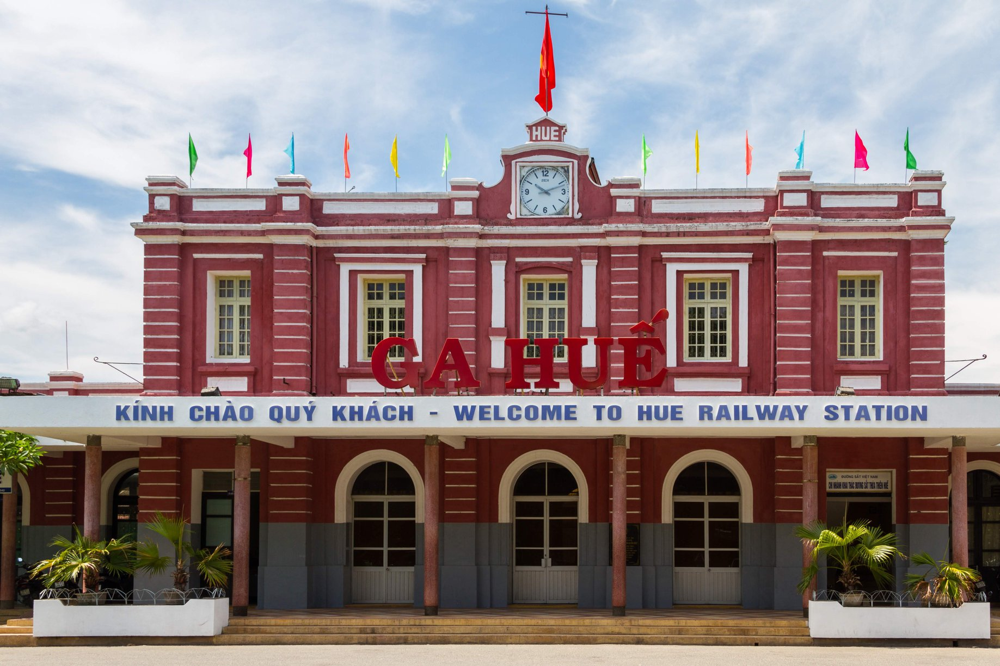

“Huế buồn lắm", một câu nói muôn thuở của những vị khách từng đi du lịch Huế hay thậm
chí cả những người còn chưa đặt chân tới vùng đất này. Nhưng mỗi người chúng ta đều có
những cách riêng để tận hưởng chuyến du lịch của mình. Những nét kiến trúc khiến ta mê
mẩn, bạt ngàn quán ăn ngon hợp túi tiền và cây xanh rợp bóng xen kẽ những tia nắng hè,....
chắc hẳn đã để lại ký ức khó quên cho những người trót yêu Huế. Và nếu bạn đang tìm kiếm
một nơi để “chữa lành" tâm hồn xanh giữa cuộc sống bộn bề, thì Huế là một điểm dừng
chân khó có thể bỏ qua.
Ga Huế
Nơi chứng kiến những cuộc hội ngộ và chia xa, Ga Huế có thể được coi là một biểu tượng du lịch của Huế nói riêng và miền Trung nói chung. Với kiến trúc Pháp cổ được xây từ những năm đầu thế kỷ 20 (1902-1908), đến nay Ga Huế vẫn còn giữ được nét đẹp cổ kính cùng gam màu đỏ hồng nổi bật theo thời gian, gây ấn tượng cho bất kỳ ai đến khám phá Huế.

Ít ai biết nhà ga có tên cũ là “Trường Súng”, xuất xứ từ khu đất xây nhà ga, trước làm
nơi các binh lính tập bắn súng. Điểm dừng chân này cũng là chứng nhân lịch sử của nhiều
sự kiện quan trọng. Chuyến tàu Thống Nhất đầu tiên vào ngày cuối năm 1976 nối hai miền
Nam Bắc sau khi Thống Nhất Đất Nước, xuất phát tại ga Hà Nội và ga Sài Gòn đã “bắt tay
nhau” tại Huế (dù chênh lệch gần 10 tiếng đồng hồ nhưng vẫn cùng ngày hẹn 2-1-1977), với
ý nghĩa “non sông nối liền một dải".
Không chỉ là nơi đưa đón hành khách, nhà ga này chứng kiến bao cuộc hội ngộ, chia ly,
mang những “giấc mưu sinh” của biết bao người bản địa và tứ xứ.
Bởi ga Huế nằm ở ngay trung tâm thành phố, những vị du khách có thể nhanh chóng tới
những địa điểm tham quan nổi tiếng của xứ Kinh Kỳ.
Du ngoạn trên sông Hương
Huế không chỉ gắn với vẻ đẹp cổ kính của những đền chùa, thành quách, lăng tẩm... mà còn
nổi tiếng với dòng sông Hương thơ mộng nằm giữa lòng thành phố. Sông Hương như một dải
lụa mềm mại uốn lượn, ôm trọn những di sản văn hóa quý giá. Sông chảy đến đâu, làng mạc
và cư dân chan hòa đến đó. Dòng sông đã mở ra nguồn thiêng cho sự sống và tâm linh của
người dân trên mảnh đất Cố đô.
Tựa như trục xương sống chia hai bờ Bắc - Nam của thành phố Huế, Sông Hương được biết đến
với 6 cây cầu bắc qua, bao gồm: cầu Trường Tiền, cầu Phú Xuân, cầu Dã Viên, cầu Kim Long,
cầu Đập Đá và cầu Chợ Dinh.
Khi màn đêm buông xuống, thành phố Huế trở nên thật lấp lánh với những ánh sáng dịu dàng.
Ánh đèn từ những cây cầu bắc ngang dòng sông Hương như dát bạc lên mặt nước, soi bóng những
chiếc thuyền rồng lững lờ trôi, chở theo du khách xuôi dòng sông thơ.
Ngồi trên thuyền, các du khách như lạc vào một bức tranh đầy mê hoặc. Hai bên bờ, khung cảnh
hiện đại và cổ kính đan xen hài hòa. Phía Nam thành phố rực rỡ ánh đèn, trong khi ở phía Bắc,
lá cờ đỏ sao vàng kiêu hãnh tung bay trên đỉnh Phu Văn Lâu và Đại Nội uy nghiêm. Giữa khung
cảnh nên thơ ấy, thả nhẹ một chiếc đèn hoa đăng xuống dòng sông êm đềm. Ánh nến vàng ấm áp le
lói giữa dòng nước tĩnh lặng đen tuyền, như thắp lên trong lòng một cảm giác bình yên, thanh
thản đến lạ kỳ.

Cầu Bán Nguyệt Bến Me - Cầu đi bộ Gỗ lim
Cổ kính và truyền thống, nhưng Huế cũng có những nét chấm phá mang đầy hơi thở hiện đại và
năng động. Cầu Bán Nguyệt Bến Me và Cầu đi bộ Gỗ lim là 2 cây cầu đặc biệt, không dùng để đi
từ bờ này sang bờ kia mà là địa điểm check-in, vui chơi, trò chuyện và ngắm cảnh cho người
dân và du khách ở 2 bên bờ sông Hương.
Giống như tên gọi của nó, cầu Bán Nguyệt mang một vẻ đẹp lãng mạn, nhẹ nhàng như chính hình
dáng bán nguyệt độc đáo. Không lan can, không rào chắn, hãy thử tưởng tượng đứng giữa cầu Bán
Nguyệt, phóng tầm mắt ra xa, thu trọn vào tầm nhìn khung cảnh hoàng hôn tuyệt vời với ánh nắng
chiều tà nhuộm vàng cả một góc trời. Nói không ngoa, cùng với Đồi Vọng Cảnh, cầu Bán Nguyệt
chính là điểm chụp ảnh, ngắm hoàng hôn đẹp nhất ở Huế tính đến thời điểm hiện nay.
Bên kia bờ sông là cây cầu Gỗ lim chạy dọc theo sông Hương với chiều dài gần 400m, nối tiếp
tuyến đường đi bộ trên sông với khởi đầu từ Phố đi bộ Nguyễn Đình Chiểu cho đến Công viên Lý
Tự Trọng. Là công trình kiến trúc biểu tượng cho tình hữu nghị giữa Việt Nam – Hàn Quốc, cây
cầu sẽ là nơi khiến du khách hoà mình vào không khí năng động của thành phố.
Hoạt động vui chơi: thuyền kayak, đi dạo tập thể dục, festival
Giải nhiệt mùa hè với hoạt động chèo thuyền kayak trên sông Hương để được hoà mình với thiên
nhiên và làn nước mát lạnh, khám phá những nét đẹp ẩn giấu của Huế sẽ là một trải nghiệm vô
cùng thú vị.
Festival Huế - Lễ hội văn hóa và du lịch đặc sắc bậc nhất Việt Nam, là một điểm nhấn không
thể bỏ lỡ khi nhắc đến mảnh đất cố đô. Hai năm một lần, Festival Huế lại trở lại, khoác lên
mình diện mạo mới mẻ, trẻ trung nhưng vẫn đậm đà bản sắc dân tộc, thu hút hàng triệu lượt
khách du lịch trong và ngoài nước.
Từ những sân khấu hoành tráng dựng ven dòng sông Hương thơ mộng, âm vang của Nhã Nhạc, Tuồng
Huế, Ca Huế,... đưa ta lạc vào không gian cung đình xưa. Đến những màn trình diễn nghệ thuật
đương đại đầy màu sắc, những lễ hội đường phố sôi động, những gian hàng ẩm thực phong phú,...
Đặc biệt, chương trình HUẾ BY LIGHT - THE LIVE SHOW, một bữa tiệc trình diễn âm thanh và ánh
sáng rực rỡ sắc màu với công nghệ 3D Mapping được thực hiện trên bề mặt kiến trúc của di tích
Ngọ Môn Huế và gần đây nhất là Điện Kiến Trung vào ngày mùng 6 tháng 7 vừa qua trong buổi lễ
khai mạc Tuần lễ Festival Huế 2024 với chủ đề "Khát vọng rạng rỡ ngàn sau" đã tạo ra sức nóng
trong mùa du lịch năm nay.
Tất cả tạo nên một không gian văn hóa đa dạng, kết nối quá khứ, hiện tại và tương lai, đưa
tên tuổi Huế vang xa trên bản đồ văn hóa thế giới. Đến với Huế vào mùa Festival, bạn sẽ cảm
nhận trọn vẹn không khí lễ hội tưng bừng và đắm mình trong những giá trị văn hóa tinh túy của
ùng đất cố đô.
Huế - thành phố của những dòng sông, của những nếp nhà rêu phong cổ kính và cả những nhịp sống
hiện đại đang vươn mình phát triển. Trên mảnh đất cố đô ấy, bạn có thể tìm thấy sự bình yên
trong tâm hồn giữa những bộn bề lo toan của cuộc sống. Hãy để Huế ôm ấp bạn bằng chính vẻ đẹp
dịu dàng, nên thơ và cả những trải nghiệm đáng nhớ.
Nhưng hành trình khám phá Huế chưa dừng lại ở đó. Bởi lẽ, bên cạnh những danh lam thắng cảnh,
Huế còn níu chân du khách bằng một nét văn hóa đặc sắc khác, đó chính là ẩm thực. Hãy cùng tôi
khám phá “kinh đô ẩm thực" với muôn vàn những món ngon khó cưỡng trong bài blog tiếp theo nhé!